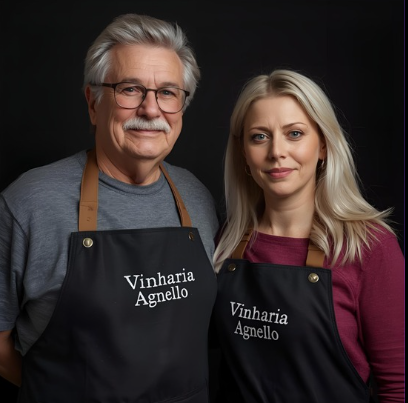
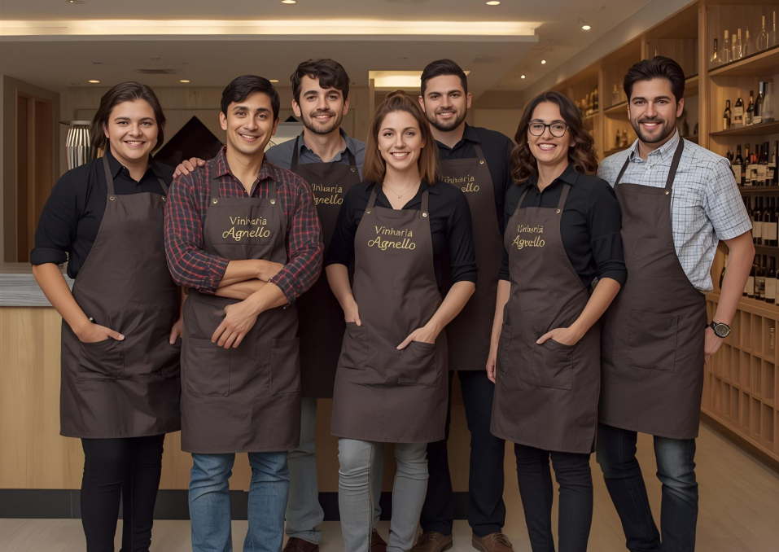

Conheça a Família Agnello

Giulio Agnello | Bianca Agnello
A Vinharia Agnello atua em São Paulo há mais de 15 anos, oferecendo ao público uma loja física especializada que reúne uma ampla seleção de rótulos de vinícolas renomadas, tanto nacionais quanto internacionais. Um dos grandes diferenciais da casa está no atendimento: seus vendedores são capacitados para auxiliar os clientes na escolha do vinho ideal, explicando as particularidades de cada uva, região produtora, vinícola e rótulo. Com esse conhecimento, conseguem indicar combinações perfeitas com diferentes pratos e momentos, garantindo experiências únicas e adequadas para cada ocasião.
Nossos fiéis escudeiros
